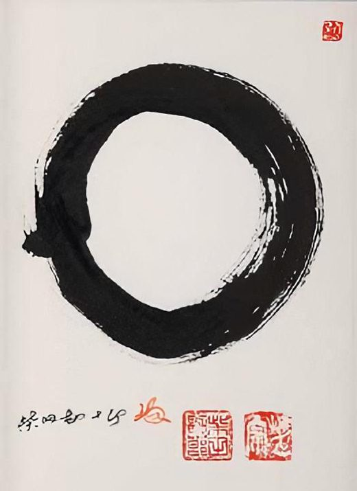
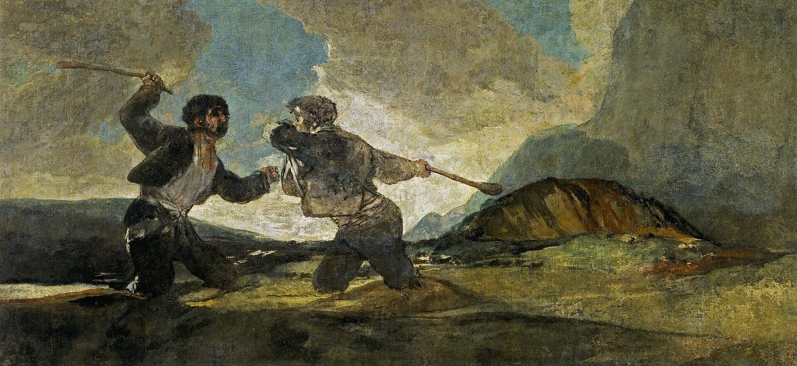

ascendant / rising sign
アセンダント
自分の星座の説明が、どうも自分に合わない。初対面の人から見た自分と、自分で思う自分が違う。占星術がそこに与えている名前が、アセンダント。太陽・月とあわせて「ビッグスリー」と呼ばれる3つ目。出生時刻が要る理由も。

自分の星座の説明を読んでも、どうもぴんと来ない。それなのに、友人に「あなたは〇〇座っぽい」と言われる星座が、自分の星座と違う。初対面の人が思う自分と、自分で思う自分が、ずいぶん違う気がする。
占星術は、この「人から見た自分」に、アセンダント（上昇宮）という名前を与えています。太陽星座、月星座とあわせて、英語圏では「ビッグスリー」と呼ばれる3つのうちの、3つ目です。このページでは、それが何で、なぜ出生時刻が要るのか、何を表すとされているのかを、順に見ていきます。
アセンダントとは、何なのか
太陽星座は「太陽がどの星座にあったか」、月星座は「月がどの星座にあったか」でした。アセンダントは、天体ではなく地平線を基準にします。生まれた場所で、生まれた時刻に、東の空の縁にどの星座がかかっていたか。
地球は1日に1回転するので、東の地平線にかかる星座は、およそ2時間ごとに次の星座へ移ります。1日で12星座をひとめぐりする計算です。
これが、アセンダントを出すのに出生時刻と出生地の両方が要る理由です。太陽は1か月、月は2日と少し、同じ星座にとどまります。アセンダントは2時間です。ウィキペディアの項目は、「記録された出生時刻が15分違うだけで、アセンダントの星座が変わることがある」と書いています。
「ホロスコープ」という言葉の、もとの意味
つまり、いま「ホロスコープ」と呼ばれている出生図は、名前の上では、この「昇ってくる星座」から始まっています。
何を表すと言われているのか
アメリカの占星術サイト CHANI（ニューヨーク・タイムズのベストセラー作家、チャーニ・ニコラスが率いています）は、3つをこう説明しています。
月星座 — 「あなたの体と、感情の世界を描く」
アセンダント — 「生きるうえでの動機と、自分という感覚を照らす」
ウィキペディアの項目は、占星術のなかでの一般的な説明として、アセンダントは「その人が、世界に対して自分をどう見せるように学んできたか。とくに、公の場や、個人的でない場面で」を表すとしています。「仮面」という言い方もされます。相手があなたの深いところを知る前に、最初に見る顔、という意味です。外見に表れる、とする説明もあります。
この3つを並べると、占星術の側の考え方が見えてきます。
・月 — 内側。何に安心し、何に揺れるか
・アセンダント — 入口。人がまず出会う自分
「星座の説明が自分に合わない」と感じる人に、占星術の側が「アセンダントを見てみて」と言うのは、このためです。人が「あなたらしい」と思うものは、太陽星座ではなくアセンダントに出る、という考え方です。友人の言う「あなたは〇〇座っぽい」が、自分の星座と違うとき、その〇〇座がアセンダントであることは、この分野では珍しくない、とされています。
出生時刻が、分からない
アセンダントで、いちばん多くの人がつまずくところです。
出生時刻は、母子健康手帳に記録されていることがあります。出生届の控え、病院の記録に残っていることもあります。ご家族が覚えている場合もあります。
それでも分からない場合について、CHANI はこう書いています。
「正確な出生時刻が分からない人もいます。もしそうでも、心配はいりません。それでも出生図と意味のある形で付き合っていくことはできます」
この分野には、人生の出来事から逆算して出生時刻を推定する方法（レクティフィケーション）もありますが、それは占星術家に依頼する専門的な作業で、このページの範囲を超えます。
太陽星座は誕生日だけで、月星座は多くの場合、日付だけでも2つまでに絞れます。アセンダントだけが、時刻なしでは手が出ない。3つのうち、いちばん「個人的」なものが、いちばん求めるものが多い、という形になっています。
ビッグスリーという言い方
太陽・月・アセンダントの3つをまとめて「ビッグスリー」と呼び、この3つで自己紹介をする言い方が、英語圏では広まっています。「太陽は蟹座、月は牡羊座、上昇は乙女座」のように。
日本語では、この言い方はまだそれほど広まっていません。日本で「星座」といえば太陽星座のことで、3つを並べる習慣は、占星術に親しんでいる人のあいだにとどまっています。ただ、太陽星座のページに書いたとおり、太陽星座だけで語る形は1930年に新聞のために作られた省略形で、占星術の側から見れば、3つ揃って初めて「その人」が読める、とされています。
どこから来たのか
アセンダントは、占星術の最も古い層にある考え方です。ウィキペディアの項目によれば、その起源は古代エジプトにさかのぼり、ギリシャで「ホロスコポス（時を示すもの）」と呼ばれました。上に書いたとおり、これが「ホロスコープ」という言葉のもとです。
出生図（ホロスコープ）では、アセンダントが「第1ハウス」の始まりになり、そこから12のハウスが区切られます。また、アセンダントの星座を司る惑星が「チャートルーラー（図の支配星）」と呼ばれ、その図全体の性格を決める、とされています。つまりアセンダントは、3つのうちの1つというより、出生図全体の起点です。
近いことを言っているもの
- 太陽星座 — 誕生日だけで決まる、いちばん知られた星座。別のページで扱っています
- 月星座 — 内側の感じ方を受け持つとされる星座。別のページで扱っています。計算するページもあります
- ペルソナ — ユングの言葉で、人が社会に向けてつける「仮面」のこと。アセンダントの「仮面」という説明と、よく似た形です。ユング自身は占星術に関心を持っていましたが、ペルソナはアセンダントとは別に、心理学の言葉として作られたものです
- 第一印象 — 心理学では、初対面の印象が数秒で作られ、その後の判断に影響し続けることが研究されています。アセンダントが「人がまず出会う自分」だとすれば、それが働く場面です
出典・参考
- What's the difference between my Sun, Moon, and rising signs?（CHANI）太陽・月・上昇宮それぞれの説明と、出生時刻が分からない人への言葉
- Ascendant（英語版ウィキペディア）定義、約2時間で変わること、「ホロスコポス」の語源
関連することば
 ascension / 5Dアセンション「アセンション症状」と検索した。骨まで疲れている。動悸がする。友人が急にいなくなった。理由の分からない悲しみがある。この分野では、それを何だと説明し、何をすればよいと言っているのか。「地球が5次元へ移る」という話はどこから来たのか。英語圏の「31のサイン」、日本語の「24の現象」と「ゆっくり解説」、長く教えてきた著者の「特別なものにしない」という言葉。そして、同じ経験に精神医学がつけている名前。
ascension / 5Dアセンション「アセンション症状」と検索した。骨まで疲れている。動悸がする。友人が急にいなくなった。理由の分からない悲しみがある。この分野では、それを何だと説明し、何をすればよいと言っているのか。「地球が5次元へ移る」という話はどこから来たのか。英語圏の「31のサイン」、日本語の「24の現象」と「ゆっくり解説」、長く教えてきた著者の「特別なものにしない」という言葉。そして、同じ経験に精神医学がつけている名前。
overactive mind / monkey mindモンキーマインド考えが止まらない。夜中に目が覚めて、頭が回りはじめる。瞑想しようとしても、五分ともたない。「頭を静めなさい」と言われるけれど、どうすれば。この分野で名前の知られた人が、四年の隠遁生活のあとに街の暮らしで見つけた四つの方法と、「さまよう心」について脳科学が調べてきたこと。「心猿」という古い言葉も。 affirmationsアファメーション「私は豊かだ」「私は愛されている」と毎朝唱えている。でも、唱えるたびに、嘘をついている気がする。効いているのか、逆効果なのか。この分野で「これを先に身につけないと効かない」と言われている一つのこつと、38の言葉。この言葉の来歴（1910年、1984年）、日本語の「言霊」、そして心理学が2009年に見つけた「効く人と、逆効果になる人」の違い。
affirmationsアファメーション「私は豊かだ」「私は愛されている」と毎朝唱えている。でも、唱えるたびに、嘘をついている気がする。効いているのか、逆効果なのか。この分野で「これを先に身につけないと効かない」と言われている一つのこつと、38の言葉。この言葉の来歴（1910年、1984年）、日本語の「言霊」、そして心理学が2009年に見つけた「効く人と、逆効果になる人」の違い。
toxic peopleトキシックな人会うたびに、消耗する。二十分お茶をしただけで、空っぽになる。でも、親だから、同僚だから、子どもの父親だから、縁を切れない。この分野では、「切って終わり」とは言われず、三つの手順が挙げられています。日本語の「モラハラ」という言葉の来歴と、「境界線」について心理学の側が言っていることも。 how to pray祈り方宗教は持っていない。でも、祈りたいときがある。誰に、どう言えばいいのか。手を合わせるだけでいいのか。この分野で語られている「宗教の祈りとの違い」と、四つの手順。日本語の「祈り」の広さ——神棚から包丁塚まで——と、「祈りは効くのか」を1872年から調べてきた研究の側が言っていること。
how to pray祈り方宗教は持っていない。でも、祈りたいときがある。誰に、どう言えばいいのか。手を合わせるだけでいいのか。この分野で語られている「宗教の祈りとの違い」と、四つの手順。日本語の「祈り」の広さ——神棚から包丁塚まで——と、「祈りは効くのか」を1872年から調べてきた研究の側が言っていること。 inner childインナーチャイルド恋愛になると、急に子どもに戻ってしまう。人が離れていくのが怖い。安心できたことがない。自分のなかの「子ども」が傷ついているのか、どう確かめ、どう向き合えばよいと言われているか。英語圏の解説、日本語の精神科医・誘導瞑想・カウンセラーの三つの立場、心理療法の側の扱い、この言葉の来歴。
inner childインナーチャイルド恋愛になると、急に子どもに戻ってしまう。人が離れていくのが怖い。安心できたことがない。自分のなかの「子ども」が傷ついているのか、どう確かめ、どう向き合えばよいと言われているか。英語圏の解説、日本語の精神科医・誘導瞑想・カウンセラーの三つの立場、心理療法の側の扱い、この言葉の来歴。